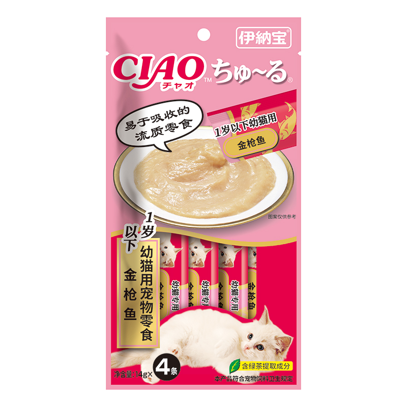

SÚP THƯỞNG CHO MÈO
Thương hiệu: CIAO | Tình trạng: Còn hàng
40.000đ
Thông tin cơ bản:
Súp thưởng cho mèo CIAO Tuna vị cá ngừ biển say nhuyễn kết hợp với Polydextrose và Fructooligosaccharides có lợi cho tiêu hóa và sự hấp thụ dinh dưỡng của mèo. Có thể thưởng cho mèo ăn trực tiếp hoặc trộn cùng với thức ăn khác. Sản phẩm không chưa chất bảo quản. Mèo đặc biệt rất thích loại nước súp thưởng này.
Số lượng sản phẩm:
MÔ TẢ CHI TIẾT
Thành phần dinh dưỡng:
Thịt cá ngừ 26%, tinh bột, chất điều vị sò điệp, chiết xuất men rượu Youliang, dầu đậu nành…. cùng các hương liệu phụ gia an toàn khác.
Hướng dẫn sử dụng:
- Cho mèo ăn một ngày từ 2 đến 3 lần trở lên, mỗi lần khoảng 1 túi.
- Khi muốn đổi thức ăn mới cho mèo, có thể trộn lẫn thức ăn cũ và mới khi cho ăn.
- Hoặc có thể điều chỉnh tùy theo trọng lượng và mức độ hoạt động của mỗi bé mèo.
- Bảo quản trong tủ lạnh sau khi mở. Nên hâm ấm trước khi sử dụng.
Hạn sử dụng:
2 năm kể từ ngày sản xuất.
Súp thưởng cho mèo CIAO Churu Tuna vị cá ngừ biển được bán nguyên túi gồm 4 túi nhỏ bên trong, không bán rời.
ĐÁNH GIÁ SẢN PHẨM